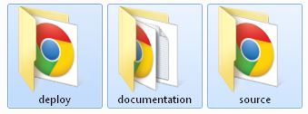

HTML 5 Video Player & Advertising
- created: 03/15/2013
- latest update: 05/10/2015
- by: _zac_
- codecanyon.net/user/_zac_
- email: zeljko.sofic@gmail.com
Thank you for purchasing my item. If you have any questions that are beyond the scope of this help file, please feel free to email me via my user page contact form on CodeCanyon. Thanks so much!
About product
This is HTML 5 Video Player with/without advertisement system. You can use player to play advertisement video before your main video, and also you can have popup advertisement at any time during playback. Advertisement can be removed. Player look is customisable via CSS, so you can easily customise colors and adjust it to your needs. Player si resizeable so it fits perfectly in every website design.
Directory and files explanation
Inside the download zip from CodeCanyon you'll find the following structure:

deploy - containes "minified" versions of all scripts (js/css). This means the scripts/css files have been compressed so they load faster.
documentation - containes documentation files
source - containes original versions of all scripts (js/css).Identical to "deploy" folder except nothing is minified. If you wish to change css and javascript files use this folder. After making changes, for faster loading you can minify the CSS/JS files by using the following tools:
JS: http://closure-compiler.appspot.com/home
CSS: http://www.refresh-sf.com/yui/
How to use / plugin options
Open index.html file from the "deploy" folder.
Video player only needs few lines of code to get started:
$(document).ready(function($)
{
videoPlayer = $("#video").Video();
});
But you can also override the default settings by passing the arguments.
Below is example of calling the plugin with explanation of arguments (all plugin options):
$(document).ready(function($)
{
videoPlayer = $("#video").Video({
autoplay:false, //choose if autoplay when webpage loads, true/false
autohideControls:4, //hide player controls in seconds
videoPlayerWidth:746, //video player width
videoPlayerHeight:420, //video player height
posterImg:"images/preview_images/3.jpg", //preview image for player
fullscreen_native:true, //choose real fullscreen, true/false
fullscreen_browser:false, //choose browser fullscreen, true/false
restartOnFinish:false, //choose to restart video when finished: true/false
spaceKeyActive:true, //choose to enable space key on keyboard:true/false
rightClickMenu:true, //enable/disable right click over HTML5 player: true/false
hideVideoSource:false, //option to hide self hosted video sources (to prevent users from download/steal your videos): true/false
share:[{ //share menu
show:true, //choose to have share menu available, true/false
facebookLink:"http://codecanyon.net/", //link to go when facebook clicked
twitterLink:"http://codecanyon.net/", //link to go when twitter clicked
youtubeLink:"http://codecanyon.net/", //link to go when youtube clicked
pinterestLink:"http://codecanyon.net/", //link to go when pinterest clicked
linkedinLink:"http://codecanyon.net/", //link to go when linkedin clicked
googlePlusLink:"http://codecanyon.net/", //link to go when googlePlus clicked
deliciousLink:"http://codecanyon.net/", //link to go when delicious clicked
mailLink:"http://codecanyon.net/" //link to go when mail clicked
}],
logo:[{ //optional logo image
show:true, //choose to have logo, true/false
clickable:true, //logo can be clicked or not, true/false
path:"images/logo/logo.png", //path to your logo image name
goToLink:"http://codecanyon.net/", //link to go to when logo is clicked
position:"bottom-right" //choose from bottom-left or bottom-right or top-right
}],
embed:[{ //embed window
show:true, //choose if you want embed available or not, true/false
embedCode:'<iframe src="www.yoursite.com/player/index.html" width="746" height="420" frameborder="0" webkitAllowFullScreen mozallowfullscreen allowFullScreen></iframe>'
}],
videos:[
{
id:0,
title:"Logo reveal", //video title
mp4:"http://server/video1.mp4", //path to main mp4 video file
info:"Video info goes here", //info window
popupAdvertisementShow:true, //choose to have popup advertisement, true/false
popupAdvertisementPath:"images/advertisement_images/ad2.jpg", //path to popup advertisement image
popupAdvertisementGotoLink:"http://codecanyon.net/", //link to go when popup advertisement clicked
popupAdvertisementStartTime:"00:02", //choose start time for popup advertisement
popupAdvertisementEndTime:"00:05", //choose end time for popup advertisement
videoAdvertisementShow:true, //choose to have video advertisement, true/false
videoAdvertisementGotoLink:"http://codecanyon.net/", //link to go when video advertisement clicked
videoAdvertisement_mp4:"http://server/video3.mp4" //path to mp4 video ad
]
});
});
Paths of the videos should be an absolute URL.
Example:
http://server/file.mp4
Adding video player to your webpage
- Copy all from the deploy folder to server
- Insert following code in between <head>......</head> of your web document (code from index.html file)
<meta http-equiv="Content-Type" content="text/html; charset=utf-8">
<title>Responsive HTML5 Video Player with/without Advertising</title>
<meta name="description" content="Responsive HTML5 Video Palyer with/without Advertising />
<meta property="og:title" content="HTML5 Video Player by _zac_" />
<meta property="og:image" content="http://player.pageflip.com.hr/imgFB/preview.png" />
<link rel="stylesheet" href="css/videoPlayerMain.css" type="text/css">
<link rel="stylesheet" href="css/videoPlayer.theme1.css" type="text/css">
<script src="https://ajax.googleapis.com/ajax/libs/jquery/1.8.3/jquery.js"></script>
<script src="js/IScroll4Custom.js" type="text/javascript"></script>
<script src='js/THREEx.FullScreen.js'></script>
<script src="js/videoPlayer.js" type="text/javascript"></script>
<script src="js/Playlist.js" type="text/javascript"></script>
<script type="text/javascript" charset="utf-8">
$(document).ready(function($)
{
videoPlayer = $("#video").Video({
autoplay:false,
autohideControls:4,
videoPlayerWidth:746,
videoPlayerHeight:420,
posterImg:"images/preview_images/1.jpg",
fullscreen_native:true,
fullscreen_browser:false,
restartOnFinish:false,
spaceKeyActive:true,
rightClickMenu:true,
hideVideoSource:false,
share:[{
show:true,
facebookLink:"https://www.facebook.com/sharer/sharer.php?u=http%3A%2F%2Fwww.player.pageflip.com.hr%2FplayerFB%2Findex.html",
twitterLink:"https://twitter.com/intent/tweet?source=webclient&text=Responsive+HTML5+video+player+with+Advertising+by+zac+http%3A%2F%2Fwww.player.pageflip.com.hr%2FplayerFB%2Findex.html",
youtubeLink:"http://www.youtube.com/watch?v=sAFt_cb-Z7I",
pinterestLink:"http://pinterest.com/pin/create/bookmarklet/?media=http%3A%2F%2Fwww.player.pageflip.com.hr%2FimgFB%2F%2Fpreview.png&url=http%3A%2F%2Fwww.player.pageflip.com.hr%2FplayerFB%2F&description=ResponsiveHTML5VideoPlayerWithAdvertising",
linkedinLink:"http://www.linkedin.com/cws/share?url=http%3A%2F%2Fwww.player.pageflip.com.hr%2FplayerFB%2F&original_referer=http%3A%2F%2Fwww.pageflip.com.hr%2FplayerFB%2F&token=&isFramed=true&lang=en_US&_ts=1378818194488.6047",
googlePlusLink:"https://plus.google.com/share?url=http://www.player.pageflip.com.hr/playerFB/index.html",
deliciousLink:"https://delicious.com/post?url=http://www.pageflip.com.hr/playerFB/&title=Responsive%20HTML5%20Video%20Player%20with%20Advertising%20by%20zac",
mailLink:"mailto:codecanyon@codecanyon.net"
}],
logo:[{
show:true,
clickable:true,
path:"images/logo/logo.png",
goToLink:"http://codecanyon.net/",
position:"top-right"
}],
embed:[{
show:true,
embedCode:'<iframe src="www.yoursite.com/player/index.html" width="746" height="420" frameborder="0" webkitAllowFullScreen mozallowfullscreen allowFullScreen></iframe>'
}],
videos:[{
id:0,
title:"Logo reveal",
mp4:"http://server /video1.mp4",
info:"Video info goes here",
popupAdvertisementShow:true,
popupAdvertisementPath:"images/advertisement_images/ad2.jpg",
popupAdvertisementGotoLink:"http://codecanyon.net/",
popupAdvertisementStartTime:"00:02",
popupAdvertisementEndTime:"00:10",
videoAdvertisementShow:true,
videoAdvertisementGotoLink:"http://codecanyon.net/",
videoAdvertisement_mp4:"http://server/video3.mp4"
}]
});
});
</script>
- Next step, in your web document, insert the following line of code where you want to video player appear in between <body>...... <body>
<div id="video"></div>
A webpage should only load one instance of jQuery. Loading more then one instance of the jQuery library can cause conflicts.
Features
- responsive
- optional advertisement (video & popup)
- multiple themes
- mobile friendly (iPhone, iPad, android)
- all browsers compatible
- multiple instances: you can insert more players in same page
- optional logo: you can insert your logo as image (.jpg, .png). Logo position can be in bottom-left corner or bottom-right corner
- optional preview image: if you want your player to be paused when page loads, you can set preview image
- autohide controls: you can choose after how much seconds player controls will disappear
- autoplay: on/off
- complete volume control
- optional share menu: facebook, twitter, myspace, wordpress, linkedin, flickr, blogger, delicious, mail
- optional embed code: for visitors to embed your player in their sites
- info window with HTML formatted text (it means you can insert links, change fonts, sizes with standard HTML tags)
- rewind
- tooltip for time
- tooltip for volume percentage
- fullscreen support (when not supported real fullscreen it switches to full browser support)
- double click to enter/exit fullscreen
- SPACE key play/pause
- ESCAPE key to exit fullscreen
Video Formats
You will need to provide only mp4 format to make player work cross-browsers.
To convert your video to mp4 you can use this online converter.

Change skin / customisation
CHANGE SKIN (PRE-BUILT):
You can use one of 5 pre-built skins. To change skin do the following steps:
- in your HTML code find line where it says "theme 1"
<link rel="stylesheet" href="css/videoPlayer.theme1.css" type="text/css">
- make changes to "theme 2"
<link rel="stylesheet" href="css/videoPlayer.theme2.css" type="text/css">
All done, you have applied theme 2 to your player!
CUSTOMISATIONS BY YOUR OWN:
If you want to change some color/icon/font by your own, you can do that by opening file for example "videoPlayer.theme2.css" for skin 2.
For example change color of progress bar and turn off radius corners:
Multiple instances of player
You can have multiple players per page. Every player can have it's own settings.
Add the following in your HTML page:
Example - 2 player in one page:
<script type="text/javascript" charset="utf-8">
$(document).ready(function($)
{
videoPlayer = $("#video").Video({
});
//add this for player 2
videoPlayer = $("#video2").Video({
});
});
</script>
<body>
<div id="video"></div>
//add this for player 2:
<div id="video2"></div>
</body>
Done! Now you should be able to see 2 player in your HTML page.
More works by zac
If you like this product, don't forget to rate
You can give rating here: http://codecanyon.net/downloads
You may also like...
Ultra Video Player - HTML5 / YouTube / Vimeo / Ads - responsive jQuery plugin